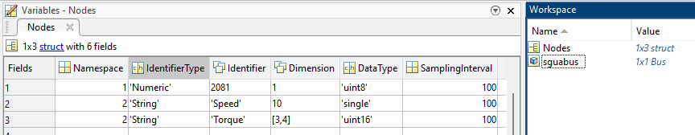
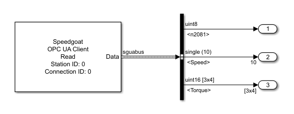

OPC UA - Client Read — Reads the value of an OPC UA variable node in the remote server
The Read block reads the value attribute of specific variable nodes in the remote server. When the block is triggered by the input port, it sends out read requests and updates the output ports according to the response received. As an option, the block can ask the server for unsolicited transmission of current values (subscriptions). You can read multiple nodes with one Read block.
Outputs the current values of the requested nodes. The port type can be:
Scalar, if one scalar node is configured
Vector, if one node of type vector is configured
Matrix, if one node of type matrix is configured
Vector, if multiple scalar nodes of the same data type are configured
Bus, if Bus Output is selected
The data type and dimensions are either defined by the Init Value parameter or by the DataType and Dimension elements of the struct defined in the Nodes parameter. Both the data type and dimensions must match the data type and dimensions of the node's value attribute in the remote server. Otherwise, the Status port outputs an error.
Data type: Fundamental data types from boolean to double are supported as well as dimensions from scalar values to 2D-arrays
Outputs either the status code of the local send operation or the status code included in the response. Successful data exchange is indicated by 0. This port is visible if the Additional Outputs parameter is selected and the Bus Output parameter is cleared. Otherwise, the port is hidden.
Data type: uint32
Outputs the local time a read response was received. A timestamp is represented by the number of milliseconds since 1-Jan-1970 00:00:00 UTC. Discover the OPC UA product examples and find out how to decode the timestamp. This port is visible if the Additional Outputs parameter is selected and the Bus Output parameter is cleared. Otherwise, the port is hidden.
This port can be used to check for a new response message received. A Detect Change block connected with the Time output port indicates if the Value output port has been updated.
Data type: uint64
The block sends out read requests as long as the input port is TRUE. The transmission of a request happens at each sample hit according to the block's sample time.
Best practice is to set the block's sample time to a higher rate (like 1 ms) and trigger the Enable input port at a lower rate. This ensures low network traffic but immediate updates of the output ports once a response is received. Discover the OPC UA product examples and find out how a Pulse Generator in conjunction with a Detect Change block serve as a cyclic trigger.
Since explicit read requests are not required if subscriptions are used, the port is hidden if the Create Subscription parameter is selected.
Data type: boolean
Apply the Station ID of the corresponding Setup block. Must range between 0 and 65535.
Apply the Connection ID of the corresponding Connection block. Must range between 0 and 65535.
If selected, Nodes must be configured in the Nodes parameter instead of the Node tab.
As an alternative to configuring a node in the Node tab, the node properties can be passed as a struct to this parameter. The Extended Node Configuration parameter must be selected for this purpose. Define an array of struct for reading multiple nodes. The required struct elements are:
Namespace (see Namespace parameter)
IdentifierType (see Identifier Type parameter)
Identifier (see Identifier parameter)
Dimension: The dimension(s) of the node. Possible values are
1 for scalar values
n for vectors
[m, n] for 2D-arrays
DataType: The data type of the node. Must be passed as a character array. Possible options are: double, single, uint32, int32, uint16, int16, uint8, int8, boolean
SamplingInterval: The interval at which the remote server should check for value changes. Required if the Create Subscription parameter is selected.
You can create the struct in the base workspace, the model workspace or in a data dictionary and pass the variable name to the mask parameter. Example:
Nodes(1).Namespace = 1;
Nodes(1).IdentifierType = 'Numeric';
Nodes(1).Identifier = 2081;
Nodes(1).Dimension = 1;
Nodes(1).DataType = 'uint8';
Nodes(1).SamplingInterval = 100;
Nodes(end+1).Namespace = 2;
Nodes(end).IdentifierType = 'String';
Nodes(end).Identifier = 'Speed';
Nodes(end).Dimension = 10;
Nodes(end).DataType = 'single';
Nodes(end).SamplingInterval = 100;
Nodes(end+1).Namespace = 2;
Nodes(end).IdentifierType = 'String';
Nodes(end).Identifier = 'Torque';
Nodes(end).Dimension = [3,4];
Nodes(end).DataType = 'double';
Nodes(end).SamplingInterval = 100;

As an alternative, you can directly define the struct in the mask parameter. Example:
[struct('Namespace',1,'IdentifierType','Numeric','Identifier',2081,'Dimension',1,'DataType','uint8','SamplingInterval',100), ...
struct('Namespace',2,'IdentifierType','String','Identifier','Speed','Dimension',10,'DataType','single','SamplingInterval',100), ...
struct('Namespace',2,'IdentifierType','String','Identifier','Torque','Dimension',[3,4],'DataType','double','SamplingInterval',100)]
It is not possible to define init values for the Data output port or the value element in the data bus. Instead, 0 is indicated in all data elements when the real-time application starts. If an init value is required, place a dedicated Read block for the specific node and use the Node tab for configuration.
If selected, the value, status and timestamp information of the requested nodes are output as a bus. The corresponding Simulink Bus object is automatically created in the base workspace. Each defined node is represented by a bus element whose name is derived from the node identifier. The matlab.lang.makeValidName function is called to convert the identifier into a string that works with code generation. For long strings, increase the Maximum Identifier Length. If the Additional Outputs parameter is cleared, this bus element holds the value received. If the Additional Outputs parameter is selected, each bus element has sub-elements for value, status and timestamp.

To ensure unique bus element names, use separate blocks for reading nodes with the same identifier but different namespaces.
The name for the Simulink Bus object to be created in the base workspace. The name must be a character array. An empty character array results in an automatically created bus name based on the block name. The matlab.lang.makeValidName function is called to convert the name into a string that works with code generation. For long names, increase the Maximum Identifier Length model parameter. The parameter is visible if the Bus Output parameter is selected. Otherwise, the parameter is hidden.
If selected, status and timestamp information of the read operation is either output via the Status and Time output ports or included in the data bus depending on whether the Bus Output parameter is checked or not.
If selected, the client asks the server to create a subscription and adds the defined nodes as so-called monitored items to this subscription. According to the items' sampling intervals, the server checks for data changes and autonomously sends the current values to the client (unsolicited transmission). Such publish messages are never sent more often than the Publishing Interval parameter in the Subscription tab allows.
Defines the base sample time at which this driver block gets its sample hit. This parameter can also be set to -1 for inherited sample time. The units are in seconds.
This tab is visible if the Extended Node Configuration parameter is cleared. Otherwise, the tab is hidden. On the Node tab you can configure one single node for reading.
The index of the namespace to which the node is related.
Defines the format of the Node Identifier parameter. Refer to the OPC UA Server Node block content for further information about this parameter.
The unique identifier of the node within the specified namespace. Refer to the OPC UA Server Node block content for further information about this parameter.
The value that the Data output port or the value element in the data bus holds before a read or a publish response is received. The parameter value's data type and dimensions define the data type and dimensions of the Data port or the bus element and must match the data type and dimensions of the node's value in the remote server. Fundamental data types from boolean to double are supported as well as dimensions from scalar values to 2D-arrays.
When you select this check box, the block outputs a vector of length N, provided the Init Value parameter evaluates to an N-element row or column vector. When you clear this check box, the block outputs a matrix of dimension 1-by-N or N-by-1.
This tab is visible if the Create Subscription parameter is selected. Otherwise, the tab is hidden.
The interval at which the remote server should send the current values of the monitored items.